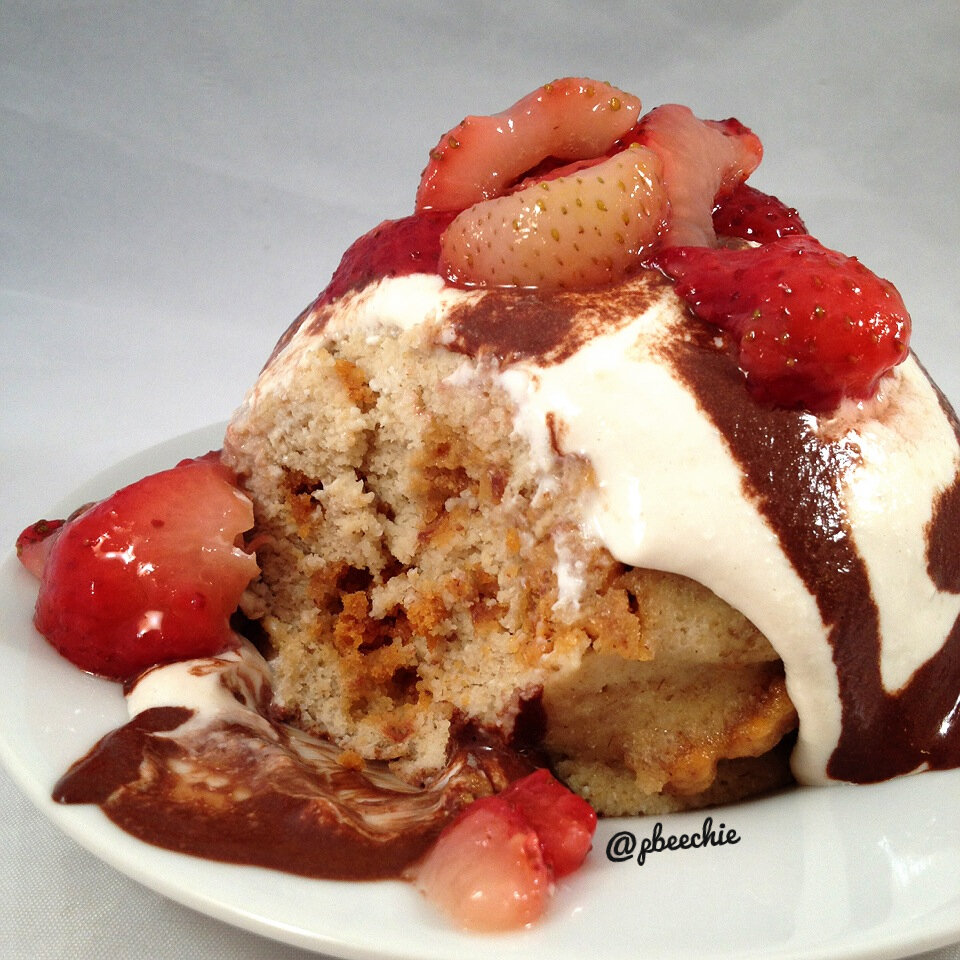

Strawberry Cheesecake Mugcake
I made this wonderful mugcake after my workout yesterday because I was reeeeally craving a sweet meal. I was SO happy with the texture and the taste of this! Everything was perfect. One bite and I knew I needed to share this recipe. This was so filling and very satisfying. I say it can either be 1 or 2 servings because even I had to pause to finish this! I can usually shovel down endless amounts of food so use that to gauge :p

Strawberry Cheesecake MugcakeServes: 1-2Mugcake
- 1/2 cup old fashioned rolled oats
- 1/2 cup liquid egg whites (or 3 egg whites)
- 2 TBSP unsweetened applesauce
- 2 TBSP plain Greek yogurt
- 1 TBSP coconut flour
- 1 tsp vanilla extract
- 1/2 tsp butter extract
- 1/2 tsp baking powder
- 1 stevia packet
- 1/2 strawberry cheesecake quest bar
Cheesecake Icing
- 1/3 cup lowfat cottage cheese
- 1/2 TBSP coconut flour
- 1/2 TBSP almond flour (or more coconut flour)
- 1/2 tsp vanilla extract
- 5-7 stevia drops
Chocolate Sauce
- 2 tsp unsweetened cocoa powder
- 1 TBSP unsweetened almond milk
- 1 stevia packet
Grind the oats into a flour. Then add the rest of the mugcake ingredients (except for the quest bar) and blend again. Break apart the 1/2 quest bar into pieces and swirl it into the batter. Pour the batter into a bowl sprayed with nonstick spray. Microwave for 2:45-3:15 minutes. Then flip onto a plate and let cool.
While that's cooling, make the cheesecake icing by blending the 5 listed ingredients with a hand blender. Place on the mugcake. Make the chocolate sauce by mixing the cocoa powder, almond milk, and stevia. Also drizzle that on. Then add strawberries :) Try not to go into a food heaven coma.
Mugcake with quest inside only, no toppings: 361 calories; 6g fat, 48 g carbs (16 g fiber), 33 g proteinFor everything: 500 calories; 10g fat, 64 g carbs (18 g fiber), 45 g protein